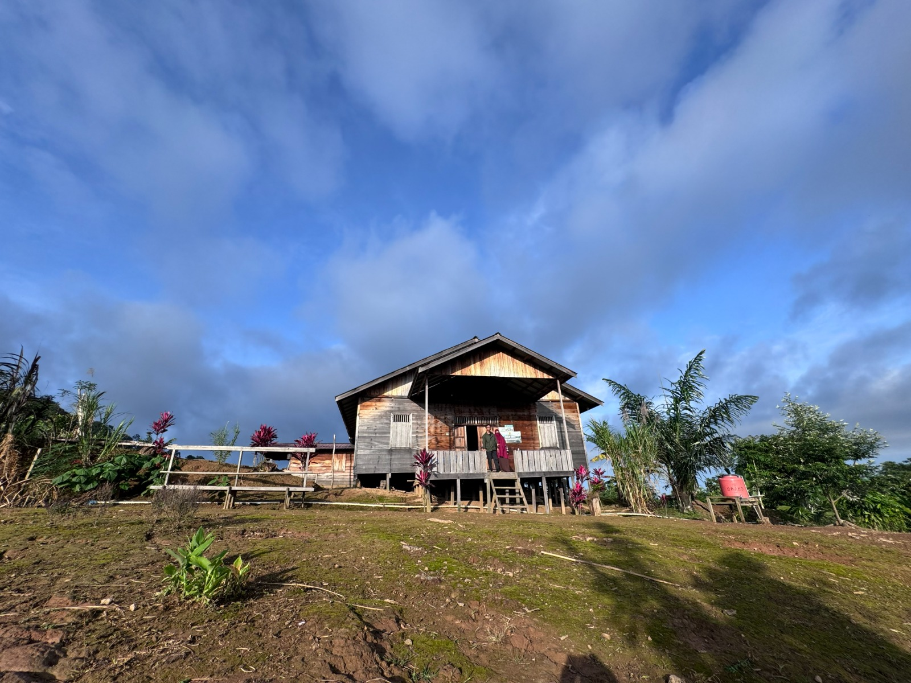

Daya Tarik Pegunungan Meratus
informasi

Pohon Kariwaya Meratus
Pohon kariwaya yang ada di Meratus sebagai pintu gerbang pendakian ke puncak gunung halau-halau

balai adat kiyu
Balai Adat Kiyu berada di Kampung Kiyu, Desa Hinas Kiri, Kecamatan Batang Alai Timur, Kabupaten Hulu Sungai Tengah, Kalimantan Selatan. Kawasan ini merupakan salah satu perkampungan masyarakat Dayak Meratus yang masih menjaga tradisi dan kearifan lokal secara turun-temurun.